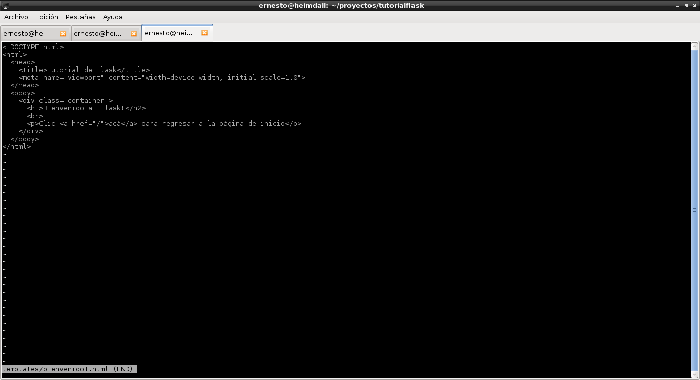
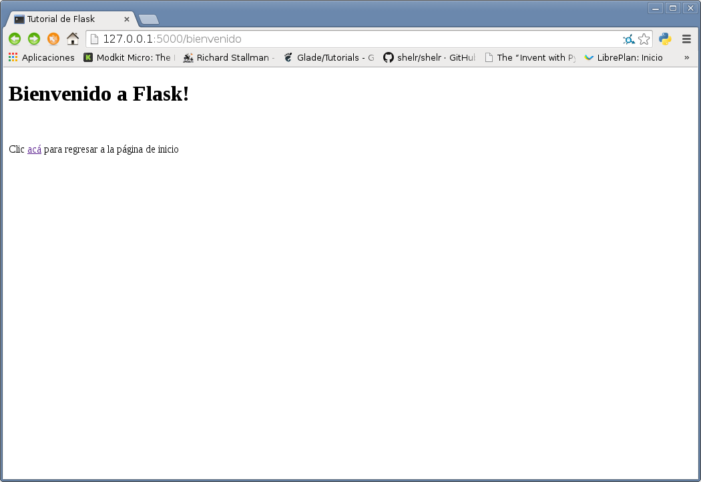
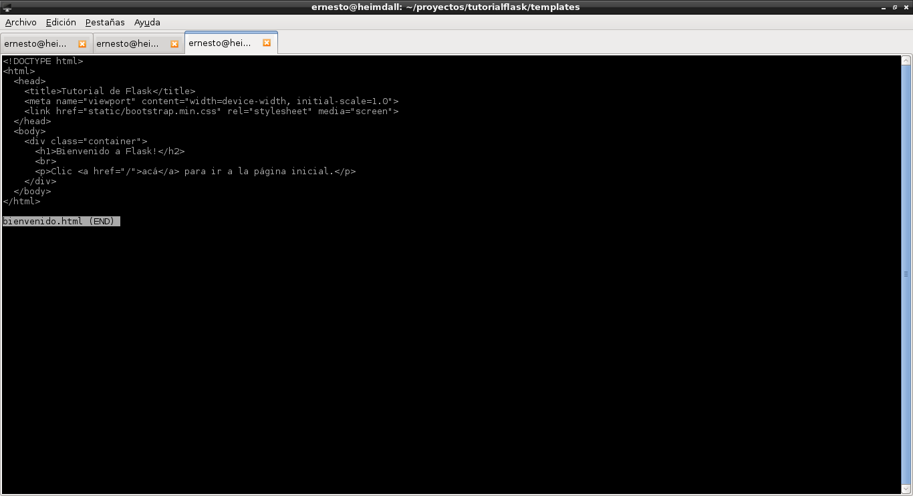
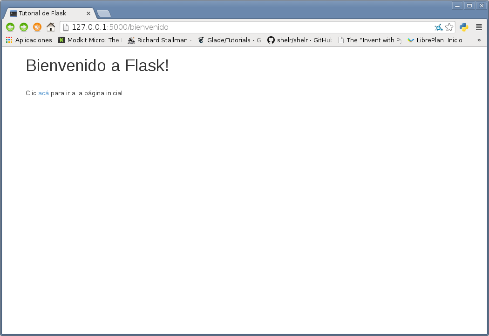

Configurando un sitio estático con flask
Posted on Sun 08 June 2014 in Tutorial Python • 2 min read
Continuando con la serie de artículos sobre el microframework de desarrollo web flask, ahora se mostrará como crear un sitio estático.
Este artículo se basa en un artículo en inglés llamado Introduction to Flask, Part 1 - Setting up a static site.
Se usará el mismo archivo utilizado en los artículos anteriores (app.py), en este caso simplemente se agregará el decorador y la función que se va a usar que será para llamar una página de bienvenida.
Aparte del archivo app.py se necesita crear dos directorios, uno llamado templates el cual contendrá la plantilla html y el otro se llamará static que contendrá archivos estáticos como archivos css y archivos javascript.
ernesto@heimdall:~/proyectos/tutorialflask$ ls -l
total 12
-rw-r--r-- 1 ernesto ernesto 792 jun 7 20:56 app.py
drwxr-xr-x 2 ernesto ernesto 4096 jun 7 21:09 static
drwxr-xr-x 2 ernesto ernesto 4096 jun 7 21:10 templates
El archivo app.py tendrá la siguiente información adicional:
#Se agrega el renderizado de la plantilla
from flask import Flask,request,redirect,render_template
#Se usa el decorador ruta para ver el url bienvenido.
@app.route('/bienvenido')
#Se crea la funcion welcome que renderiza una plantilla html.
def welcome():
return render_template('bienvenido.html') # renderiza la plantilla bienvenido.html.
Ahora en el directorio templates se crea el archivo bienvenido.html con el siguiente contenido:

Se ejecuta la aplicación y se consulta el url http://127.0.0.1:5000/bienvenido

Ahora se usará un estilo que se llama bootstrap para descargarlo lo puede hacer desde el enlace. Al bajarlo y descomprimirlo copie los archivos bootstrap.min.css y bootstrap.min.js al directorio static, como se muestra a continuación:
ernesto@heimdall:~/proyectos/tutorialflask$ ls -l static/
total 132
-rw-r--r-- 1 ernesto ernesto 99961 feb 13 12:54 bootstrap.min.css
-rw-r--r-- 1 ernesto ernesto 29110 feb 13 12:54 bootstrap.min.js
A continuación se muestran los nuevos cambios a la plantilla bienvenido.html para que use los archivos mencionados anteriormente.

Ahora se abre el navegador al url http://127.0.0.1:5000/bienvenido y se obtiene lo que muestra la siguiente figura:

¡Haz tu donativo! Si te gustó el artículo puedes realizar un donativo con Bitcoin (BTC) usando la billetera digital de tu preferencia a la siguiente dirección: 17MtNybhdkA9GV3UNS6BTwPcuhjXoPrSzV
O Escaneando el código QR desde la billetera: